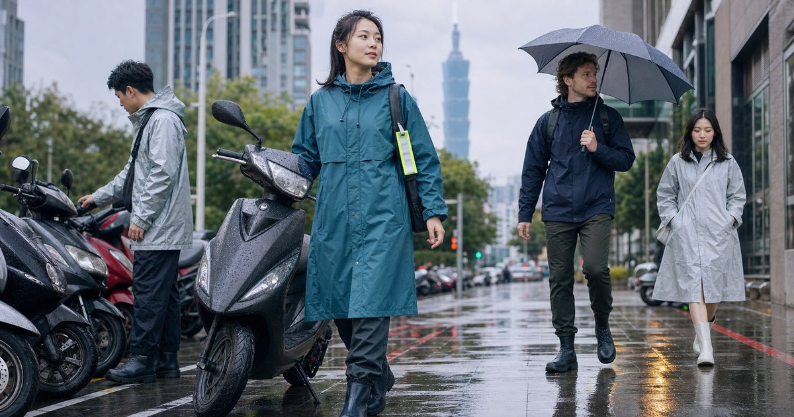

機車通勤與戶外雨天裝備：雨衣、雨鞋、抗風傘與反光配件怎麼搭
雨天通勤不只是防濕，還要處理視線、鞋包、車廂收納與低能見度。這篇整理雨衣、雨鞋、抗風傘、反光配件與包內防水的配置順序，讓日常移動更穩。

先分清楚步行雨天和機車雨天
步行雨天的重點是輕便、好收、進出室內不狼狽；機車雨天的重點則是覆蓋、穩定、視線與低能見度。很多人把同一把傘、同一件雨衣用在所有情境，結果每一種情境都只解決一半。
OMBRA 適合先處理雨衣、雨鞋與雨傘這類基本雨具；反光屋 FKW 的角色是補上夜間、地下停車場、巷弄或大雨時的辨識度；LFM 機車精品可作為機車周邊與騎乘配件的延伸來源。
- 步行為主：折傘、防潑水鞋面、小型防水袋優先。
- 機車為主：雨衣、雨鞋或鞋套、反光配件與車廂收納優先。
雨衣的核心不是防水，而是穿得住
一件雨衣如果很難穿、太悶、帽緣一直擋視線，最後就算防水規格再漂亮，也很容易被放在車廂底層。通勤雨衣最重要的是穿脫速度、袖口密合、下擺覆蓋、帽型穩定，以及坐上車後會不會拉扯。
挑 OMBRA 這類雨具時，可以先用自己的交通工具反推：騎車時間多長、會不會背後背包、下車後是否要直接進辦公室、雨衣收起來放哪裡。若常背包，雨衣背部空間或包袋防水要一起考慮。
- 袖口要能減少雨水沿手腕滲入。
- 帽緣要能遮雨，但不能影響視線與安全判斷。
雨鞋與鞋套決定你到目的地的狀態
雨天最影響心情的往往不是上衣，而是鞋襪。鞋子一濕，接下來半天都很難舒服。若工作場合需要一定體面感，可以考慮外觀不太突兀的雨鞋，或是在車廂放鞋套與備用襪。
選雨鞋時，鞋底止滑、筒高、重量和鞋口是否磨腳，比單純外觀更重要。若你只是偶爾遇到午後雨，鞋套可能比一雙完整雨鞋更容易使用；但若每天騎車或常走積水路段，一雙穩定雨鞋會比臨時塑膠套可靠。
- 短距離步行：防潑水鞋或鞋套可能已足夠。
- 機車通勤：鞋面、褲管與雨衣下擺要一起保護。
低能見度時，反光配件不是裝飾
大雨、黃昏、地下停車場和巷弄交會處，都是能見度快速下降的情境。反光配件不需要誇張到破壞穿搭，但它應該出現在容易被看見的位置，例如背包側邊、雨衣後方、車身小區域或手臂附近。
反光配件不能取代安全駕駛與照明，也不應被理解成安全保證。它的角色是提高辨識度，讓其他用路人更容易注意到你。若你常在雨天騎車，反光配件可以和 LFM 機車精品相關周邊一起規劃。
- 優先位置：背包後側、雨衣背部、車身側邊。
- 小面積多點配置，通常比單一大貼片更自然。
抗風傘適合步行段，不適合騎乘時使用
FULTON 或左都雨傘這類傘具，更適合處理下車後的步行段：停車場到辦公室、捷運站到餐廳、雨棚間的短距離移動。抗風傘的價值在於傘面穩定與收合手感，而不是讓它取代機車雨衣。
若你的通勤包含騎車和步行，最好把傘放在公司或包側容易拿的位置，把雨衣和鞋套放在車廂固定位置。這樣每個物品都在它適合的位置，不會在雨中臨時翻找。
- 傘具負責步行段，雨衣負責騎乘段。
- 濕傘要有收納袋，避免包內其他物品受潮。
包內防水和收納，決定雨後整理成本
很多雨天裝備只處理人不濕，卻忘了包內物品。筆電、文件、行動電源、耳機、化妝包，只要其中一樣進水，損失和麻煩都比衣服濕掉大。即使你使用防潑水包，也建議把電子用品再放進內層防水袋。
雨天通勤可以固定一個小包內配置：防水袋、擦拭巾、備用口罩或襪子、小型塑膠袋、簡單髮夾或束帶。這些東西不昂貴，但能讓你到目的地後快速恢復狀態。UV100 的防曬外套則可在晴雨切換的日子扮演輕外層，但真正大雨仍要靠雨具。
- 電子用品獨立防水，不和濕傘、濕雨衣放同一層。
- 車廂放一個固定雨天袋，內含擦拭巾、備用襪與小袋子。
把騎乘段和步行段分開買，會少很多錯誤
機車雨天最常見的錯誤，是用一件雨衣處理全部問題。騎乘時需要覆蓋、穩定與低能見度辨識；下車後需要收納、擦拭與不狼狽地走進室內。這兩段需求不同，裝備也應該分開看。
OMBRA 可以負責雨衣、雨鞋與基本雨具；FULTON 或左都雨傘更適合下車後的步行段；LFM 機車精品則可補上車用周邊與騎乘配件。這樣分工後，你不會期待一把傘解決騎車問題，也不會穿著厚雨衣在室內走太久。
- 騎乘段：雨衣、鞋面保護、反光與車廂收納。
- 步行段：傘具、濕物收納、擦拭巾與備用小物。
反光配件要小面積多點配置
反光屋 FKW 這類用品最適合補在容易被看見的位置，例如背包側邊、雨衣背部、車身側面或安全帽後方。它不需要大到破壞穿搭，也不應被當成安全保證；它的價值是讓雨霧、黃昏和地下停車場裡的辨識度更好。
比起只貼一大塊反光材料，更實用的是小面積多點配置。因為騎乘角度、雨衣皺褶和背包遮擋都會影響可見範圍，多點分散能降低某一處被遮住就失效的問題。
- 背包、雨衣、車身分散配置。
- 避免貼在容易被包包或皺褶遮住的位置。
雨後整理也是裝備的一部分
雨天通勤結束後，最容易被忽略的是整理流程。濕雨衣如果直接塞回車廂，下一次拿出來可能有異味；濕傘如果放進包裡，文件和電子用品都可能受潮。真正好用的雨天配置，應該包含「到達後怎麼處理」。
可以在車廂或辦公室固定放一個濕物袋、一條小毛巾和備用襪。這些不是主要裝備，卻會大幅降低雨天的不舒服。當整理流程固定，雨天出門就不會每次都像臨時應變。
- 濕雨衣先晾乾，不要長時間悶在車廂。
- 電子用品和濕物一定分層收納。
FAQ
機車通勤一定要買雨鞋嗎？
不一定。如果你的路線短、雨天不常出門，鞋套或防潑水鞋可能已足夠；但若經常大雨騎車、路面積水或到辦公室後需要保持乾爽，穩定雨鞋或固定備用鞋會更實用。
反光配件可以保證雨天安全嗎？
不可以。反光配件只能提高低能見度下的辨識度，不能取代照明、車況檢查、防禦駕駛或路況判斷。選購時請依實際使用位置與商品規格評估。 實際選購仍要回到你的交通方式、使用頻率、收納位置與商品頁規格，不建議只看單一品牌或單一功能。
抗風傘適合機車族嗎？
抗風傘主要適合下車後的步行段，例如停車場到辦公室、捷運站到餐廳。騎乘時不應使用手持傘，機車雨天仍應以合適雨衣、雨鞋與防水收納為主。 實際選購仍要回到你的交通方式、使用頻率、收納位置與商品頁規格，不建議只看單一品牌或單一功能。
下一步建議
如果你每天需要雨天移動，先把雨衣、雨鞋、反光配件與包內防水分成四個任務處理，雨天就會穩很多。
重要警語
本文為一般選購與生活情境整理，不構成醫療、專業戶外訓練或安全保證。戶外活動請依天候、路線、個人體能與現場規範評估；涉及護具、防曬或雨具等用品，實際規格、價格、活動與庫存請以商品頁公告為準。
本文含品牌／商品導購連結；若你透過部分商品連結前往選購，Elite Fashion 可能取得合作收益。本文仍以編輯判斷與使用情境整理為主，價格、規格、活動與庫存請以商品頁公告為準。